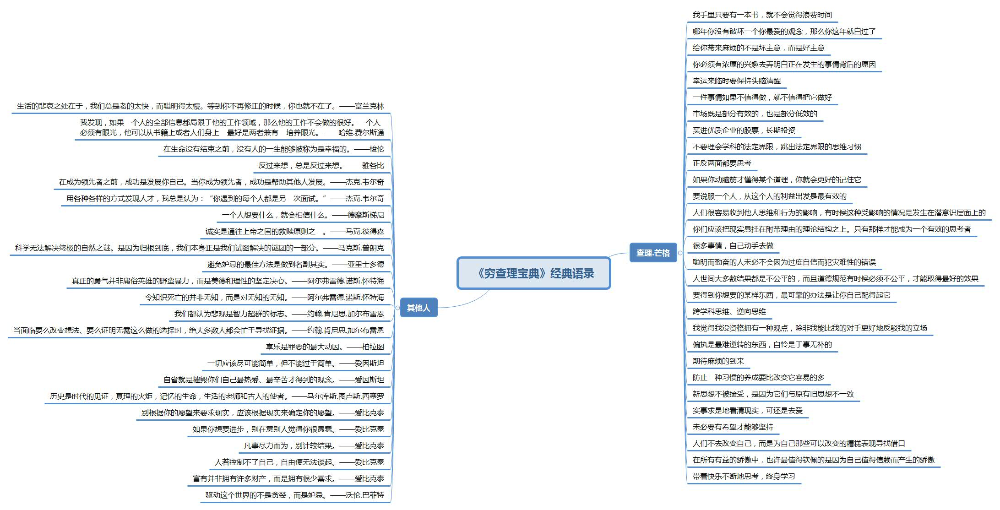
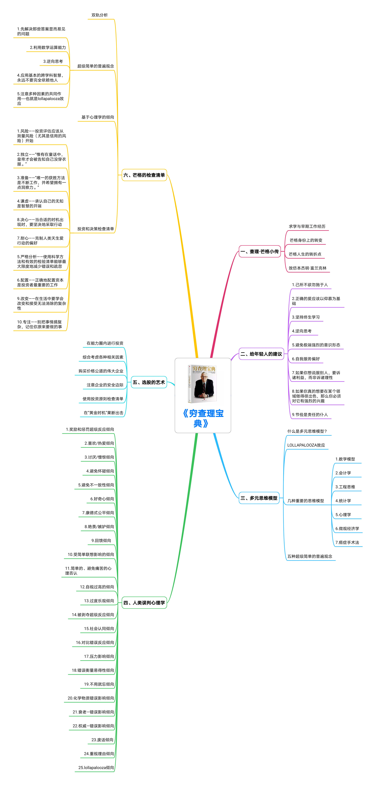
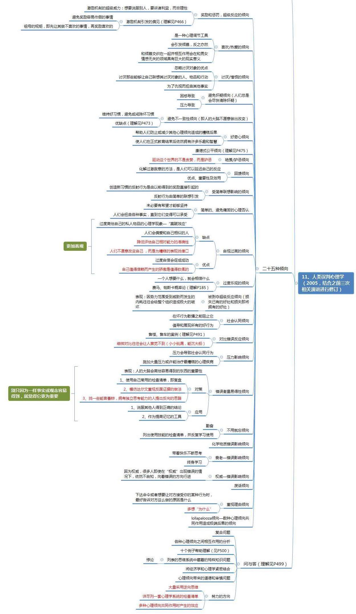

人类误判心理学-芒格
注：根据书本、网络等内容整理而成。
整体及25个心理学误区
总共25个人类误判心理倾向，查理通过自己的实践证明，他的这25条是比大多数心理学教材有用了，在实用性上拥有巨大的优势。人类的――经常出错但总体上很有用――心理倾向相当多，而且相当不同。大量的心理倾向的自然结果就是社会心理学的重要原理：认知往往取决于情景，所以不同的情景通常会引起不同的结论，哪怕是同一个人在思考同一个问题的时候也是如此。人不同于机器，不能非常科学精密地进行分析判断，因此人在决策时会有很多错误倾向，而且难以察觉。
一、奖励和惩罚，超级反应倾向
- 激励机制具有强大威力，但是也会引发偏见，激励机制能够导致人们在做坏事的时候觉得自己是正当的，人们倾向于钻制度的空子。惩罚也强烈影响到行为和认知。
- 激励机制的威力是无穷大的，它能改变个人/集体的行为。激励的威力并不全是正面的，它的另一个后果是会造成“激励机制引起的偏见”。
- 人是趋利性动物，只要激励作用在，无论怎么设计制度，都会有人想方设法去寻找漏洞。
- 方法：如果你想要说服别人，要诉诸利益，而非诉诸理性。设计制度时需避免奖励容易作假的事情
- 举例：
- 联邦快递系统的核心和灵魂是保证货物按时送达，它必须在三更半夜让所有的飞机集中到一个地方，然后把货物快速转发到各架飞机上，由此才能确保货物准时到达客户手里。但是有一段时间，联邦快递的工人总是无法按时完成工作。公司用了各种办法都无法奏效。之后，他们找到了问题的症结，并做了调整：把原来给工人按小时来支付夜班薪水的激励机制调整为：按照班次来支付薪水，并允许夜班工人在把所有货物装上飞机后提前回家。结果是，这个办法奏效了。
二、喜欢/热爱倾向
- 刚出生的人也会“天生就喜欢和热爱”对他好的人。芒格说，人类天生喜欢被喜欢、被爱。
- 促使人们忽略热爱对象的缺点，“爱屋及乌”，为了爱而扭曲事实。偏爱那些能够让自己联想起热爱对象的人、物品、行动
- 方法：发挥榜样的作用。
- 举例：
- 他跟巴菲特都受益于一个人：巴菲特的叔叔弗雷德·巴菲特。文中说弗雷德·巴菲特在杂货店有干不完的活，但干活的时候总是很快乐，对芒格跟巴菲特的影响一直持续至今，激励他们变得更好。
- 芒格除了提到弗雷德·巴菲特，还经常提及富兰克林对他的影响，从芒格的书叫《穷查理宝典》就可见一斑。
- 在交易市场里面，对所选择的投资标的产生了“爱”往往是投资失败的重要原因
三、讨厌/憎恨倾向
- 芒格说，刚出生的人类会“天生就讨厌和憎恨”对他很坏的人。
- 促使人们忽略讨厌对象的优点，讨厌能联想到讨厌对象的事物，为了仇恨扭曲事实。
- 恨而不敢表达，产生的是恐惧。恨而敢于表达，最先触发的情绪可能是愤怒。
- 方法：训练自己容纳两种立场不同、相互矛盾，包括相反的观点。把自己的恨意，借助愤怒，表达出来
- 举例：
- 人类史很大程度上也是一部战争史
四、避免怀疑倾向
- 人类的大脑天生就有一种尽快作出决定，以此消除怀疑及不确定的倾向。
- 引发的因素通常是困惑和压力，在面对宗教问题时这两种因素当然都存在，因而，大多数人的自然状态就是需要有某种宗教信仰。
- 方法：面对一个自己不够确定性的问题时，去深入挖掘当中的成因，包括未来发展的走向。观察一下比自己认知高，比自己厉害的人是怎么判断、怎么做选择的。持续地刻意练习。
- 举例：
- 在投资上，当我选择了一个投资标的后，出于“价值投资”的考虑，我可能会觉得：既然经过了解，我已经相信这个投资标的是没问题的，是有长远的投资价值的。那么，在面对相关的各种负面信息时，我会选择不去相信，或者排斥去深入了解背后的成因。
- 想熬出怀疑倾向的形成，某种程度上，是为了帮助人类减少能量的损耗。但，它的另一方面是懒惰的心理（正如王兴所说：“多数人为了逃避真正的思考愿意做任何事情）。
五、避免不一致性倾向
- 为了节省运算空间，人类的大脑会不愿意作出改变。比如人们总是很难改变自己的坏习惯。
- 本质不是它们的复杂性，而是因为它们与原有的旧思想不一致。
- 如果精于运用避免不一致性，就能控制别人的态度。一个人只要假装拥有某种身份、习惯或者结论，他自己通常就会信以为真。
- 如果你拥有一个良好的习惯（如每日写作），那么，这种持续的保持势必会带给你极大的好处。当人们维持的某个习惯、某个结论是坏的、错的，那么，保持前后的一致性，可能会是一种灾难。。
- 方法：
- 维持好习惯，避免或者戒除坏习惯。努力考虑任何有可能证伪他的假说的证据。一方面需要持续地提高自己的认知，敢于否定自己既有的观点以及习惯的做法；另一方面，在抵抗这种本性的过程中，当中会产生各种不适的情绪，你得能够做到不受其影响。所以，必然是需要持续地刻意练习的。
- 举例：
- 很多人会每天穿同样风格、甚至一样的衣服（如乔布斯的牛仔裤与黑体恤、周鸿祎的红T恤）；也有很多人在喜欢吃一样菜后，在之后很长的一段时间里，每天都吃；又有很多人随着在一个公司里工作的时间越来越长，会选择一直待着，不愿跳槽。
- 因为你过去的某个结论一直到现在都是正确的，那么，你在做每一个决定时，基本不需要耗费什么时间与精力。
- 人们倾向于积累大量僵化的结论和态度，而不经常去检查和改变，即便有大量的证据表明它们是错误的。
六、好奇心倾向
- 哺乳动物天生具有好奇心，人天生具有好奇心倾向
- 好奇心能帮助人们防止或减少其他心理倾向造成的糟糕后果，也能让人哪怕结束了正式的教育也能持续拥有各种乐趣及智慧。
- 好奇这种心理，如果肆意打开，会让外部的信息源源不断地进入到我们的大脑。如果我们没有足够的能力去做归类及删减，那么，这些过多的信息反而会限制我们。再者，我们很容易根据我们所接收到的信息，去形成一些观点。更可怕的是，我们会以为这些观点代表着事实。
- 方法：在面对我们习以为常的事实或持有的观点时，一定要把“好奇心”这匹马放出来遛一遛。在面对一些能让我们产生即时快感，包括容易快速产生价值判断的信息时，我们则要有意识地控制一下自己的好奇心。有效驾驭自己好奇心的一个方向是：我们要不断打磨自己的认知框架（筛选、界限等）。
- 举例：
- 前五个误判心理里面的“讨厌不确定性”及追求“一致性”，某种程度上都是人们为了节省能量，而抑制了求知、求真的欲望。
- 芒格本身就是一个好奇心极强的人。他平常大量涉猎各学科的知识，例如，物理学、生物学、气象学、哲学等，这些在很多外人看来与投资并无直接关系的知识，恰恰是帮助查理·芒格能做出精准投资决策的基础。
- 乔布斯的”Stay hungry. Stay foolish.”不也在提醒我们要时刻保持好奇心？
- 新闻媒体在我看来，某种程度上是为人类的这种好奇心理寻得了一个释放的出口。
七、康德式公平倾向
- 人们表现出并期待从别人那里得到康德所定义的公平。康德式命令是某种“黄金法则”，它要求人们遵守这些方式，那么就能够保证社会制度对每个人来说都是最好的。同时，当人们期待然而没有得到公平分配时，往往会表现出不满的情绪。类似孔子的“己所不欲，勿施于人。”
- 追求公平是人的一种天性，而且，公平的存在，是能够提高群体的运转效率的。但规则总是有漏洞的
- 薛兆丰：每当我们在讲公平的时候，背后的含义是说，它是符合效率的。只有那些让社会里每个人都有积极性去积累财富的规则，才是公正的规则；只有那些让社会能够存活下来的规则，才是公正的规则。
- 方法：努力做个明白人，然后主动做出符合你需求跟价值观的选择
- 举例：
- 很多受过教育的人，多少都有这样的倾向：我愿意遵守规则，并期待别人也能遵守规则。对于不能遵守规则的人，会产生不满情绪。
- 也有人利用规则谋取个人利益。
八、艳羡/妒忌倾向
- 妒忌无处不在。“驱动这个世界的不是贪婪，而是嫉妒。”
- 嫉羡：眼红、得不到毁掉。贪婪：眼红、想办法占有但不毁灭。嫉妒：眼红、知道差别界限。
- 方法：只要能正视自己的欲望，并相信自己配得起并能拥有好东西，那么，自己会努力变得强大。甚至，如果还愿意承认其他比自己强大的人的存在，并且笃信，那些好东西，是从这些更强大的人身上获得的，那么，你甚至会感谢他们，并且愿意在他们面前低头。这个时候，你的嫉妒心理会转化成“感恩”。
- 举例：
- 如果某个物种在进化过程中经常挨饿，那么这个物种的成员在看到食物时，就会产生占有那食物的强烈冲动。如果被看到的食物实际上已经被同物种的另外一个成员占有，那么这两个成员之间往往会出现冲突的局面。
- 大多数人在公共场合下也会避开承认自己有嫉妒的心理。从古至今，不同文化普遍都在宣扬嫉妒的邪恶
九、回馈倾向
- 投桃报李、以牙还牙是人类的天性，请尽情释放。这种倾向的好处是可以促进有利于成员利益的团队合作。
- 很多人会利用这些心理让别人做出原本不会做的决策，需要提防。
- 对坏人过于仁慈与宽容，某种程度上是在伤害那些真正的好人。如果对所爱的人都无法自然地去取悦，我会怀疑这种爱是虚伪的，甚至是假的。
- 如果你是期望通过以德报怨来获益，则可能显得有些一厢情愿。（外国人思维，中国人可能有些不一样了，这里就有冲突，需要综合看待，分类综合使用）
- 方法：敢爱敢恨，快意恩仇。互相让步。
- 举例：
- 销售员善意行为会引起你额外多付出钱
- 谈判中，自己有所让步对方也大多会作出让步
- 情感关系中，正反馈会引发美好的感情互动
- 对于工作中的客户，我们也要主动地先去付出、去取悦他们。如果只是靠着“等靠要”的心理，就想获得客户的好感，我觉得是违反规律的，是一种妄想。
十、受简单联想影响的倾向
- 避免受到简单联想的误导。
- 相当于条件反射，由某个东西简单联想到另外一个东西从而产生影响。
- 方法：
- 富兰克林提议：结婚前要睁大双眼看清楚，结婚后要睁一只眼闭一只眼。芒格提议：实事求是地看清现实，可还是去爱。
- 审慎地看待每次的成功，提取出当中的偶然因素，以免夸大新行动的成功概率。
- 分析新的行动里将可能遇到哪些在过去没有出现的危险因素。
- 成功往往是偶然的，而失败则常是必然的。
- 举例：
- 古代波斯人会把送来坏消息的信使杀掉。原因只是因为这些信使把真实的坏消息带回了波斯。但这样就不会有人敢送来任何消息。
- 实际质量相差无几的产品，我们会偏向去选择更贵的产品。因为价钱更贵，容易让我们联想到质量更有保证。
- 很多知名品牌的广告要么是充满爱的，要么是充满力量的。背后的原理很简单：我们会因为这些充满爱与力量的广告，联想到它们对应的产品也是充满爱跟力量的，由此，不由自主地去购买、消费这些产品。
- 当我们在想做好事时，最好考虑一下人性的某些因素，否则，当遇到你完全没有预料到的结果时，你可能会对做好事这个行为产生怀疑。比如接济穷人、流浪人员等。
十一、简单的、避免痛苦的心理否认
- 当现实太过于让人觉得痛苦，人们倾向于去否认它。经常跟爱情、死亡和对化学物质依赖有关。痛苦：求而不得、丧失
- 悲剧本身并不一定会导致心理问题，它之所以令我们陷入困境，常常是因为我们想否认人生的悲剧性。
- 会让你正视对于你真正重要的人与事，如果你顺着这个方向挖掘下去，可能就是你扭转人生的开始。
- 方法：多数人要么完全不去让这种痛苦流动起来，要么干脆在头脑层面把这种痛苦给切割掉，然后声称自己已经不在意了，其实日后的每一天基本都受其影响。
- 举例：
- 很多人沉迷于酒精与毒品，导火索普遍是因为当时那个痛苦实在太大了，大到让其难以接受
- 二战期间，芒格家有位世交的儿子非常优秀，可是他在乘坐飞机时遇难了。他母亲难以接受这个现实，所以，一直拒绝相信他儿子已经去世。
- 悲剧本身并不一定会导致心理问题，它之所以令我们陷入困境，常常是因为我们想否认人生的悲剧性。
- 有些人在面对大病、甚至是生死关头，最终活过来后，能就此彻底改变自己的原因。
十二、自视过高的倾向
- 过度重视自己，人们倾向于夸大各种与自己相关的人和事物的价值
- 人们总是容易过度重视自己，会倾向于认为自己拥有的东西更好，并会偏好跟自己相似的人待在一起。
- 禀赋效应：人们做出决定之后，就会觉得自己的决定很好，甚至比没做出这种决定之前所认为的要好。
- 方法：努力做到客观。我们这个文明社会中最有用的成员就是那些发现他们管理的机构内部出现问题时愿意“清理门户”的负责人（习大大反腐、打黑，Robin、Qi、珊珊改变风气，良币驱逐劣币）。
- 举例：
- “丢钱包实验”
- 这是心理学的一个实验。实验的结果表明：如果捡到钱包的人，根据从钱包里找到的线索发现失主跟自己在某些方面有相似性，那么，归还钱包的概率是最高的。
- “丢钱包实验”
十三、过度乐观倾向
- 过度自信。古希腊演说家德摩斯梯尼说：一个人想要什么，就会相信什么。
- 现实生活中，很多成功的人正是来源于他们的过度自信。有句格言是这么说的：”千万别低估那些高估自己的人”。他们肯定不只是自信，还有行吧，很多为人没成功前讲得话，在当初听是什么感觉？芒格认为，高度的自我称赞要比虚伪的谦虚好得多。
- 方法：学习应用概率论。把对“人”的关注转向对“事”的关注
- 举例：
- 彩票、竞技项目中的过度自信研究发现，在买彩票时，如果号码是买家自己挑选的，那么相比号码是随机分配的而言，他们下的赌注会更多。而实际上这两种情况的获奖概率显然是一样的。
- 如果有人喜欢某项运动，例如足球，那么当他们觉得对各个球队的情况比较了解时，会很自然地去买体育彩票。再如，在一些竞技项目里，人们会倾向于挑选那些实际水平比自己高很多的选手。
- 芒格说，他在担任某个学术委员会的主席时，试图说服其他人不要对求职者进行面试，而只要看其书面申请材料里显得较优秀的人就可以了。当然，得到其他人的反驳，并被指不尊重学术。而芒格的观点是：学术研究表明，从面试中得来的印象，其预测价值很低。根据这个观点，当在面试中碰到的是能说会道的人时，一定要小心，不要太相信自己的印象。
- “托尔斯泰效应”
- 按托尔斯泰的观点，很多恶贯满盈的罪犯并不会觉得自己有多坏。他们通常认为：1、他们并没有真正犯过罪；2、基于他们过去糟糕的处境，包括面临的生存压力，他们所作出的行为，完全应该得到理解及原谅。事实上，我们在生活中会遇到这样一类人：他们在做错事后，把其自身贬得一文不值，诉说自己多么的不容易，有着太多的问题，并且也为此做了努力，只是结果还是这样。所以，需要得到谅解。甚至会让我们产生一种幻觉：如果不原谅他们，似乎是我们的错。芒格说，这样的人，应该把其当做是品德有问题。
十四、被剥夺超级反应倾向
- 厌恶损失。
- 方法：厌恶损失是人们潜意识层面的心理，难以彻底避免。一方面是提升我们自身的认知水平，另一方面，可以建立一种反思的机制，时刻监控自己的决策，事后总结自己的错误行为等。整理自己曾因厌恶损失的心理而犯错的各个事件，描述清楚当时的心理活动、情绪及行为等，而且，日后都可以把这种记录作为一种功课。
- 举例：
- 失去才会懂得珍惜
- 芒格夫妇养了一条很温顺的狗，通常这只狗是不会咬人的。但是，只有一种例外情况：在给它喂食的时候，如果你把食物从它嘴里拿走，那么，它会去咬你。
- 一个人得到10美元的感受和失去10美元的感受分量是不同的。失去造成的伤害比得到带来的快乐多得多。除此之外，如果有个人即将得到某样他非常渴望的东西，而这样的东西却在最后一刻飞走了，那么他的反应就会像这件东西他已经拥有了很久却突然被夺走一样。
- 赌徒很容易倾家荡产的原因是在于：他们在输钱后，在“厌恶损失”的驱使下，会急于想要扳平。而一旦输的越多，这种急躁的情绪会更加明细，直至破产。
- 当时，芒格有个股票经纪人朋友打电话给他，说要以极低的价格卖给他300股那时交易率极低的贝尔里奇石油公司的股票，每股只要115美元。芒格买完的第二天，那朋友又想以同样的价格再卖给他1500股，但芒格考虑到需要变卖一些东西才能筹到相应的现金，所以他拒绝了。然而，不到两年之后，壳牌收购了贝尔里奇石油公司，价格大约是每股3700美元。
十五、社会认同倾向
- 乌合之众，即从众心理倾向，只要模仿他们，不需要做过多的思考。这毫无疑问可以把复杂的事情简单化，很省能量。
- 人们在感到困惑或者有压力的时候，尤其是在既困惑又有压力的时候，最容易受社会认同倾向影响。
- 多数人为了逃避真正的思考愿意做任何事情。
- 方法****：跟随自己抱有的价值观及信念行事，弱化短期反馈。为了真相而直面矛盾与困难的勇气，哪怕过程中头破血流也在所不惜
- 举例：
- 一名教授让10名实验员安静地待在电梯里，且背对着电梯口。那么，在其他人进入电梯时，通常也会像那10名实验员那样背对电梯口。
- 家长最无奈的地方是：在他们苦口婆心地教育孩子时，那些孩子基本上是很难真正听从的。年轻人最尊重的是他们的同龄人，而不是他们的父母或者其他成年人。聪明的家长一般不会试图通过教训子女来教育他们，而是会了解孩子的交友质量，并做出适当地引导、干预。
- 开商店，开教育机构，以及me too me later
十六、对比错误反应倾向
- 心理锚定造成对现状的妥协以及微小错误积累导致悲剧结局，即“小错不补，能沉大船”
- 当一个人逐步逐步走向灭亡时，如果他每一步都很小，大脑的对比错误反应（对标）倾向通常会任由这个人走向万劫不复的境地。这种情况会发生，是因为每一步和他当前位置的对比太小了。
- 方法：不要忽略小失误。搞清楚自己真正要的对象是什么，利用专业人士来弥补你的认知缺漏，从系统的角度看待每一个问题。
- 举例：
- 温水煮青蛙
- 你持有的某只你非常看好的股票，在熊市即将来临的时候，价格一天天的降低，但是因为每一天的降低跟前一天比并不显得很大，所以你没有理会。但是因为价格一直在下降，以致于某一天，其实相比价格的高点，其降幅已经很大。你那时想要做出卖出的操作，但是，亏损已经很严重。
- 你去买房的时候，人家房产经纪人先带你去看几套条件很差但价格很离谱的房子，紧接着，带你去看一套条件很一般价格也一般的房子，这个时候，你很可能会成交。
十七、压力影响倾向
- 压力会引发两种心理倾向，一种是：避免怀疑倾向，一种是：社会认同倾向
- 轻度压力能轻微改善人们的表现，沉重的压力则会引发彻底失调。
- 方法：自我组织力就是，当一个人的自我在高压下感觉要散架的时候，或者被击溃而瓦解的时候，能不能重新地组织起来。如果一个人的自我组织力较强，那么他哪怕在高压下，也能够确保自己不崩溃。这样的人一般有个特点：他们敢于面对现实，哪怕这个现实让他名誉扫地或者让他处于崩溃边缘，也能够正视，包括正视自己的弱点。
- 举例：
- 人在被邪教洗脑后，虽然难，也可以在压力下恢复。
- 巴普洛夫关于压力的研究
- 巴普洛夫有一次发现，他原来训练有素的狗在一场洪水的影响下，其行为跟原来相比，显得很不一样。由此，他接下来做了看起来有点残忍的实验：他在那些狗接下来的余生里，不断地给其施加压力，让他们精神崩溃，然后再来修复这些崩溃。最终他给出了4个结论：
- 他能够对这些狗进行分类，然后预测具体某只狗有多么容易崩溃；
- 那些最不容易崩溃的狗也最不容易恢复到崩溃前的状态；
- 所有狗都可以被弄崩溃；
- 除非重新施加压力，否则他无法让崩溃的狗恢复正常。
- 巴普洛夫有一次发现，他原来训练有素的狗在一场洪水的影响下，其行为跟原来相比，显得很不一样。由此，他接下来做了看起来有点残忍的实验：他在那些狗接下来的余生里，不断地给其施加压力，让他们精神崩溃，然后再来修复这些崩溃。最终他给出了4个结论：
十八、错误衡量易得性倾向
- 人容易满足于易得的东西。人类的记忆通常分为工作记忆跟长期记忆。工作记忆“是一种对信息进行暂时加工和贮存的容量有限的记忆系统”。一方面，它是一种短期的记忆，另一方面，它记忆的容量是有限的。除非，它能被加工成长期记忆。
- 人容易满足于易得的东西，“如果我爱的女孩不在身边，我就爱身边的女孩。”
- 方法：按程序办事，包括使用检查清单。反面思考，寻找并聘请那些知识渊博、有怀疑精神、能言善辩的人，请他们扮演现有观点的反方角色。不因为容易得到而觉得更加重要。关注那些不容易被量化的因素，考虑这种倾向会让人更易记住那些鲜明的形象，所以你可以刻意让自己低估他们的重要性，尝试把注意力放在那些形象不那么鲜明的东西上。
- 举例：
- 我们在写作平台上写文章，天然地会很关注阅读量、点赞数。虽然，这些数据在一定程度上能反映问题，但如果我们误认为这是更重要的东西，则可能会失去焦点。例如，我们会容易忘记：最终让读者愿意花费注意力来关注你文章的，是你的文章能满足他们的需求。
十九、不用就忘倾向
- 方法：勤奋。提醒人们，对于任何技能，需反复练习才能熟悉掌握；需终生练习才不会遗忘。
二十、化学物质错误影响倾向
- 人们对毒品等化学物质的依赖，通常是为了逃避痛苦的现实。一旦这种依赖让人成瘾，通常会导致道德沦丧。而且，虽然有方法戒除，但整个过程会非常困难。
- 方法：远离。
二十一、衰老—错误影响倾向
- 方法：带着快乐不断思考学习。
- 举例：据伦敦国王学院细胞与行为实验室副主任桑德琳·蒂雷（Sandrine Thuret）的观点，新的神经元对人的学习和记忆很重要。她曾做过实验，如果阻止海马体产生新神经元，大脑的一些记忆功能如空间认知能力会被关掉。如果想防止大脑衰老，显然需要让大脑产生新的神经元。据桑德琳的观点，促进新神经元产生的方法有：学习、运动和饮食。衰老是个不可逆的事情，但是，大脑却是终生都具有可塑性的。只要能通过持续学习等方式保持新神经元的产生，那么，大脑的衰老是可以得到控制的。
二十二、权威—错误影响倾向
- 人类服从权威的天性：自然历史和社会历史的长期发展。
- 迷信权威有危险，选择当权者需谨慎。
- 方法：把对人的关注转向对事的关注，按程序办事，例如使用检查清单
- 举例：
- 美国有个医生给护士留了手写的纸条，吩咐的是给病人治疗耳痛。纸条上写着“Two drops, twice a day, r.ear.”（“每天两滴，右耳。”）这个护士把r.ear（右耳。r指的是right）看成了rear（屁股），于是，她让病人翻过身，把滴耳剂滴入了病人的肛门。
- 米尔格拉姆实验
- 米尔格拉姆是耶鲁大学的心理学家，他这个实验是在纳粹分子阿道夫·艾希曼被判死刑后的一年后进行的。艾希曼及其纳粹追随者在二战期间参与了犹太人的大屠杀，其中，艾希曼是执行”最终方案“的主要负责者。米尔格拉姆试图测试权威人物到底能够在多大程度上促使普通人去做罪大恶极的事情。
- 在这个实验中，有个人假扮成权威人物，一个主导这次正规实验的教授。这个人能够让许许多多普通人将他们完全信以为真的假电刑用来折磨他们的无辜同胞。过程中，会配合被电击人假装的痛苦尖叫。
- 这个实验里呈现的结果，凸显了成年人在面对权威人士时，其服从的倾向是相当巨大的。
- 当然，这个实验并不只是凸显了服从权威一种心理倾向。被命令按下电击按钮的普通人，在那个当下他也许是有道德上的愧疚感的，但是，当在场的其他人都表现出无动于衷时，这样的沉默意味着他的行为是没问题的。这是典型的“寻找认同”倾向。可见，当服从权威跟其他心理倾向搭配的时候，其产生的破坏力是很大的。
二十三、废话倾向
- 人类爱闲扯淡：人是一种拥有语言天赋的社会动物，所以，天生就有本事啰里啰嗦。一方面他们释放了自己的说话欲望，另一方面，可以证明自己的存在
- 不要让废话多的人影响到自己。避免在正式场合扯淡。
- 方法****：引领他们，而不是被引领。共情他们的感受、情绪，岔开话题。
二十四、重视理由倾向
- 万事都有理由。偏爱理由的背后，是一种对准确认知的追求。人们讨厌不确定，获得准确认知往往都很愉悦。
- 好的方面：明确感知理由，有利于达到目的。
- 坏的方面：
- 往往把理由当目的。我们会让理由成为我们前进路上的牵绊，会阻碍我们的执行力（有时候纷繁错杂，很难有准确的理由和依据）。
- 重视理由倾向是如此强大，乃至一个人给出的理由哪怕是毫无意义的或者是不准确的，也能使他的命令和要求更容易得到遵从。
- 方法：合理使用，注意场合和时机
二十五、lollapalooza倾向——数种心理倾向共同作用造成极端后果的倾向
- lollapalooza：音乐节的意思，多种音乐表演、活动形式在一起。
- 数种心理倾向共同作用造成极端后果的倾向
- 人类一个行为的产生，其背后是由多种心理因素所造成的。
- 方法****：系统性的思考。
- 举例：比如邪教组织吸引人、洗脑。
问与答（十个例子/方法）：
- 一、卡尔•布劳恩的交流方法。
- 卡尔.布劳恩掌管他的德式的大企业有一条非常简单的规矩：你必须讲清楚何人将在何时何地因何固做何事。如果你给属下写字条，吩咐他去做事情，却没有交待原因，布劳恩可能会解雇你。因为根据重视理由倾向，人们喜欢准确的认知，想要知道为什么。只有一丝不苟地把某个想法的原因都摆出来，这个想法才最容易被接受。
- 二、飞行员训练中对模拟器的使用。
- 所有的知识和技能以及天赋都会因为缺少训练而退化。明智的选择是对于那些很重要却很少派得上用场的技能等进行天天巩固练习。我们必须在多元思维模型上达到精通的状态。这需要每天练习。现实中，你除非刻意练习，否则很多重要的思维模型和技能并无用武之地。这时，飞行模拟器能够帮助你。飞行员使用飞行模拟器模拟训练各种场景，包括那些极端情境。这使得飞行员能够熟练地掌握各种必备的技能，即使飞机出现极端小概率事件，也能驾轻就熟地度过难关。
- 三、酒瘾戒除组织的制度。
- 酒瘾很难戒除。但是酒瘾戒除组织通过造成数种心理倾向一起来对抗酒瘾，能够把戒除率稳定在95%。
- 重视理由倾向：通过了解自己上瘾的原因；
- 奖励超级反应倾向：积极反馈；
- 社会认同倾向：抱团互助，我不是一个人在奋斗。
- 四、医学院中的临床培训方法。
- 床医学教育要求“先看，后做，再教”原则，只有自己看过和做过的，才可以教给别人。避免不一致的正向应用，教师会将自己相信的知识教给学生，而非相反。
- 五、美国制宪大会的规则：绝对保密的会议；
- 最终投票之前所有的投票都不记名；大会结束前选票随时可以重投；对整部宪法只投一次票。这些是非常聪明的、尊重心理学的规则。如果那些开国元勋当时使用的是另外一种表决程序，那么许多人将会受到各种心理倾向的影响，从而采用那些互不一致的、僵化的立场。那些英明的开国元勋让我们的宪法顺利通过表决，因为他们摸透了人们的心理。
- 六、使用祖母的激励机制：
- 让人们约束自己，从而更好地完成自己的任务。她说你们必须先吃完胡萝卜，然后才准吃甜点。
- 利用频率较高的活动来强化频率较低的活动，从而促进低频活动的发生。
- 管理人员每天强迫他们自己先完成他们不喜欢然而必要的任务，再奖励他们自己去处理那些他们喜欢的任务。考虑到奖励的超级威力，这种做法是明智而合理的。此外，这个规矩也可以被用于生活中非商业的部分。
- 七、哈佛大学商学院对决策树的强调。
- 在我年轻而愚蠢的时候，我经常嘲笑哈佛大学商学院。我说：“他们居然在教那些28岁的人如何在生活中应用高中的代数知识？”但后来我变得聪明了，终于明白他们的做法是很重要的，有助于预防某些心理倾向引起的糟糕后果。虽然明白得有点晚，但总比始终不明白好。
- 八、强生公司所用的类似于尸检的做法。
- 在绝大多数公司，如果你进行了并购，而这次并购成为灾难的话，所有造成这次愚蠢并购的人、文件和演说都会很快被忘记。没有人愿意提起这次并购，因为害怕联想到其糟糕的结果。但是强生公司规定每个人都要审视已完成的并购，将预测和结果进行比较。这么做是非常聪明的。
- 九、查尔斯•达尔文在避免确认偏见方面作出的伟大榜样。
- 美国药品管理局（FDA）效仿了达尔文的做法，很明智地要求在开发新药物的研究中必须采用反确认偏见的“双盲试验”（Double Blind）方法。
- 十、沃伦•巴菲特关于公开竞拍的原则：别去。
综合举例：
政府规定，新型飞机在销售之前，必须通过乘客撤离测试。测试要求满载的乘客在一段很短的时间内撤出机舱。政府的指示是，这种测试应该和现实的情况贴近。所以你撤离的乘客如果是一些只有20岁的运动员，那么肯定是通不过测试的。于是麦道安排在某个阴暗的停机库进行撤离测试，请了许多老年人来扮演乘客。飞机客舱离停机库的水泥地面大概有二十英尺高，而撤离的通道是一些不怎么结实的橡胶滑梯。
第一次测试在早晨进行。有二十个人受了重伤，而且整个撤离过程耗时超过了测试规定的标准。那么麦道接下来怎么办呢？它在当天下午进行第二次测试，这次也失败了，多了二十名严重受伤的人，其中有一个还落得终身瘫痪。
哪些心理倾向对这个可怕的结果作出了贡献呢？把芒格的心理倾向列表作为一张检查清单，将会作出如下的解释。
- 1、激励
- 富兰克林的名言：如果你想要说服别人，要诉诸利益，而非诉诸理性。
- 当一种激励机制能诱发人们获得利益，尤其是金钱利益时，人们常常会过快反应，产生误判。
- 对麦道公司而言，只要通过了飞机乘客撤离测试，就可以开始销售飞机了。销售飞机带来的收入有多大？所以难怪当事人会出现严重误判。
- 2、讨厌不确定性
- 人类的大脑天生就有一种尽快作出决定，以此消除怀疑及不确定的倾向。背后是进化的结果：在远古时代，当人类面对攻击时，如果需要花太多时间去思考该怎么做，这肯定是不够现实的事情。
- 而引发该倾向的主要因素有两个：困惑和压力。
- 对执行测试的人员而言，他们对测试的合理性也许存在疑惑，但是上层可能施与的巨大压力，让他们想排除各种不确定性，并快速做出决定。
- 3、服从权威
- 人类从古至今的等级制度决定了：人生下来就要跟随领袖（一开始是父母，然后是老师，接着是公司领导等），而充当领袖的人是少数。所以，服从权威是人类的一种天性。
- 政府给的指示是测试应与现实情况贴近，而在“服从权威”倾向的驱使下，麦道公司显然是过度遵守了该指令，采用的测试方法过于危险。
- “服从权威”这个心理倾向本质跟“讨厌不确定性”、“简单联想”相关联。
- 我们在面对权威人士时，通常是会有压力的，由此，我们会不自觉地做出快速的决定，哪怕这个决定在事后清醒思考时会觉得很可笑。
- 另外，人容易因为喜欢一个人而产生简单联想。权威人士通常会引发我们的崇拜心理，在这种情况下，对于他们发布的指令，我们往往会简单地做出联想：因为他是我崇拜的人，所以他的指令我应该执行，哪怕事实上我更专业。
- 4、一致性
- 人们是讨厌前后不一的，因为这可以节省运算空间，省时省力，这是进化的结果。
- 当测试方法及行动方案确定下来之后，在避免不一致性倾向的作用下，按计划执行似乎成了一种自然结果。
- 5、寻找认同
- 从人进化的角度而言，“寻求认同”这个倾向是很省能量的，所以保留在人类的基因里也不奇怪。例如，你看到一群人在做着同样一件事，你只要模仿他们，不需要做过多的思考。这毫无疑问可以把复杂的事情简单化。
- 而在麦道公司进行测试的这个场景里，当麦道的员工看到那些老人走进阴暗的停机库，看到飞机客舱离里面那么高，正常人怎么可能会无动于衷？
- 可是，他们的心理台词可能是这样：连我的上级其其他同事都没有表示反对，那肯定没有问题的啦。
- 所以，他们原有的不安情绪被”寻找认同“倾向神奇地消解了。
- 6、过度重视自己
- 人们总是容易过度重视自己，会倾向于认为自己拥有的东西更好，并会偏好跟自己相似的人待在一起。
- 相关的心理学概念是“禀赋效应”：人们做出决定之后，就会觉得自己的决定很好，甚至比没做出这种决定之前所认为的要好。
- 或者”确认偏见“：人们会倾向于寻找能支持自己观点的证据，对支持自己观点的信息更关注。
- 所以不难理解，在早晨的测试失败之后，包括很多人受了重伤，麦道公司依然选择一意孤行，他们屏蔽了那些证明其测试有问题的反面证据。
- 7、厌恶损失
- 这种倾向也叫”被剥夺超级反应倾向“。
- 你得到1万块的快乐，一般是远远比不过你没了1万块给你的痛苦感觉的。
- 赌徒很容易倾家荡产的原因是在于：他们在输钱后，在“厌恶损失”的驱使下，会急于想要扳平。而一旦输的越多，这种急躁的情绪会更加明细，直至破产。
- 麦道公司在这个场景里也很像是赌徒：早晨的测试失败了，我得再赌一次，不然不能如期完成测试会让公司产生巨大损失。
摘录&金句：
- 本章相关金句：
- 现实世界的问题不会恰好落在某一个学科的界线之内，它们跨越了界限。
- 人类的感知和认知系统中那些总体上很有用的倾向往往会出错，如果不对此加以小心提防，就会很容易受到别人故意的操控。
- 人类的大脑即使在有所知觉的时候，也会错误地估量它感知到的东西，因为大脑只能感知到鲜明的对比，而无法像精密的科学仪器那样以科学的单位来估算感知的变化。
- 驱动这个世界的不是贪婪，而是妒忌。
- 虽然明白的有点晚，但总比始终不明白好。
- 很多事情，自己动手去做。那我就自己来吧。
- 如果刺激被维持在一定水平之下，人类便察觉不到它的存在。
- 轻度的压力能够轻微的改善人们的表现，而沉重的压力则会引发彻底失调。
- 认知往往取决于情景，所以不同的情景通常会引起不同的结论。
- 如果你想要说服别人，要诉诸利益，而非诉诸理性。
- 重复有效的行为。即时的回报在改变和延续行为方面远远比延后的回报有效。
- 奖励超级反应倾向是一种推动人们百分百的去享受好东西的心理倾向。
- 创造出新习惯的反射行为是由以前得到的奖励直接引起的。
- 在只有铁锤的人看来，所有问题都特别像钉子。
- 避免不一致性倾向：为了节省运算空间，人类的大脑会不愿意做出改变。避免不一致性倾向造成的结果之一是，人们在获取新身份的过程中作出的重大牺牲将会提高他们对这种新身份的忠诚度。
- 化解过激的敌意的标准方法是，人们可以延迟自己的反应。
- 实事求是地看清现实，可还是去爱。
- 有意识的养成欢迎坏消息的习惯。
- 现实太过痛苦，令人无法承受，所以人们会扭曲各种事实，直到他们变得可以承受。
- 失去造成的伤害比得到带来的快乐多的多。
- 带着快乐不断的思考和学习，在某种程度上能够延缓不可避免的衰退过程。
- 你必须讲清楚和人将在何时何地，因何故做何事。
- 被剥夺超级反应倾向和避免不一致性倾向通常会联合造成一种形式的经营失败。在这种形式的失败中，一个人会耗尽他所有的优质资产，只为徒劳地试图去挽救一个变得很糟糕的投资项目。
- 人们在感到困惑或者有压力的时候，尤其是在既困惑又有压力的时候，最容易受社会认同倾向影响。
- 学会如何在其他人犯错的时候别以他们为榜样，因为很少有比这个更值得掌握的技能。
- 在前后对比度细微的变化误导之下，人们经常无法认识到通往终点的趋势。
- 不幸的是，重视理由倾向是如此强大，乃至一个人给出的理由哪怕是毫无意义的或者是不准确的，也能使他的命令和要求更容易得到遵从。
- 参考：全书金句

Todo：
- 定期复盘自己所遇到的事，是属于哪一种或几种误判心理倾向。
- 这一种很重要的，如果只是看完不反思，没过多久就忘记了。
- 把这些倾向列出一张清单，在遇到难以决择的事，可以拿出来进行一一检查。
- 久而久之，操练下去，自然就会提高我们的思考力，洞察力。
- 越开放、越客观的看待事物，越容易看到本质，越不容易被各种外在条件诱惑；
- 不要只以自我为中心，总认为自己就是对的，做决定前先找足够多的证据来试着推翻自己的结论；
- 要说服别人，要诉诸利益而非诉诸理性。或者也可以是友谊、情感等。
- 感恩身边的每一个人，每个人都对我有了一些帮助。
- 要及时回报，对待员工要及时奖励，这种奖励不一定是金钱上的，只要看见他的付出并加以认可。
- 在管理上有意识的养成欢迎坏消息的习惯，这样会给员工培养出价值观就是坏消息及时报比藏起来好。
- 当布置任务的时候一定要讲清楚原因，“你必须讲清楚和人将在何时何地，因何故做何事。”
- 并且适当的给员工压力，而不要施加过于沉重的压力。
- 要想得到一样东西，最可靠的方式让你自己配得上它，无论是工作还是配偶。
- 持续学习，每天睡觉前都比当天早晨聪明一点。
- 利用跨越科的思维模型并不断对其进行实践，以打破固有的意识形态和“铁锤人倾向。
- 逆向思维的能力，比如说如果想过的幸福，那就反过来想，去避免那些让生活变得更坏的（懒惰、嫉妒、言而无信)的行为。
- 凡事多反过来想，再反过来想。
- 注重环境的重要性：人、工作、生活等等。
参考：
全书大纲

第四章十一讲大纲：
